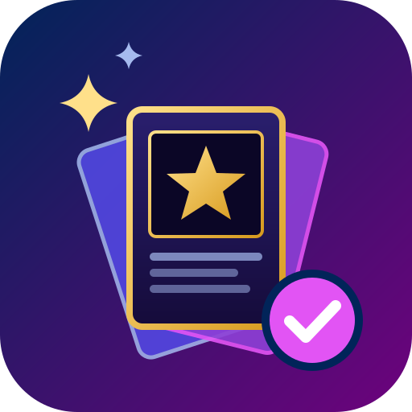

Description du projet
Ce projet personnel est une application web locale pour gérer ma collection de cartes Yu-Gi-Oh physiques. Elle permet d'enregistrer ses cartes, de voir ce qu'il manque pour compléter un deck et de classer ses decks du plus au moins réalisable. Les données des cartes (traductions, prix Cardmarket, banlist TCG) viennent de l'API publique YGOPRODeck. Un deck builder propose des decks à partir des listes de tournoi récentes, et un assistant IA basé sur un agent LangChain construit un deck sur demande en français.
Objectifs
- Remplacer un suivi manuel de collection par une application fiable
- Savoir rapidement quelles cartes acheter pour terminer un deck
- Construire des decks compétitifs avec les cartes déjà possédées
- Mettre en pratique un agent IA à outils vu en cours (R5.14)
Technologies utilisées
Python
Flask
SQLite
JavaScript
HTML5 / CSS3
pytest
LangChain
Ollama
Tesseract.js (OCR)
API YGOPRODeck
Fonctionnalités principales
- Recherche de cartes en français et en anglais, avec cache local des données
- Ajout de cartes par code de set (ex. LOB-FR005) ou par extension complète
- Scanner : lecture du nom et du code de la carte avec la caméra (OCR), y compris depuis un téléphone
- Gestion des decks : saisie manuelle, import et export de fichiers .ydk, lien ydke://
- Calcul des cartes manquantes et classement des decks du plus au moins réalisable
- Deck builder : liste type par archétype tirée des derniers decks de tournoi, dans la limite de la banlist
- Assistant IA : un agent LangChain consulte la collection, les listes types et la banlist, puis propose un deck vérifié
Points forts
- L'agent IA ne propose qu'un deck validé par ses outils, et ouvre la base en lecture seule
- Fonctionne avec un modèle local (Ollama) ou un fournisseur en ligne au choix
- Avertissements de banlist sans bloquer la saisie
- Une soixantaine de tests automatisés avec pytest
- Données stockées en local dans une base SQLite facile à sauvegarder
Défis techniques
- L'API ne connaît que les codes de set anglais : correspondance des codes français
- Découper un coffret de plusieurs decks d'après le code des cartes
- Tirer une liste type fiable de decks de tournoi qui mélangent plusieurs variantes
- Rendre l'OCR exploitable en ne lisant qu'une bande fine sur le texte de la carte
- Empêcher l'agent IA d'inventer des cartes ou des decks invalides
Apprentissages
Ce projet personnel m'a permis d'approfondir mes compétences en :
- Développement web en Python avec Flask et SQLite
- Consommation d'une API externe et mise en cache des données
- Conception d'un agent IA à outils avec LangChain
- Tests automatisés avec pytest
- Traitement d'images et OCR dans le navigateur
État du projet
Statut : Projet personnel en développement continu
Disponibilité : Application locale, non publiée en ligne pour le moment.